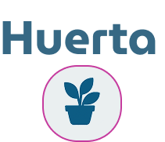
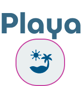
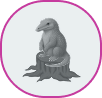
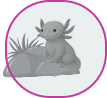

Exploración holográfica
Bienvenidos a BioArka. En nuestras ciudades prevalece la convivencia entre la naturaleza y la tecnologia
Cada ciudad se autosustenta con sus cultivos, mientras la comunidad trabaja unida para llevarlos a sus hogares.
Aunque visitada todo el año, esta playa se destaca durante el festival Tekové Pora.
Entre entradas naturales y hilos de tecnología, los túneles subterráneos se abren una vez al año, celebrando la llegada de los nuevos Bichis.
En estos domos, nuestros amigos híbridos se crean genéticamente y se incuban hasta su liberación.
En el Instagram del festival Tekove Pora encontrarás más huellas de esta historia.
Este año, nuevas criaturas se suman a ese vuelo. Descúbrelas aquí.
Cada huella conduce al viaje, cada color guarda un lugar.
Cada huella conduce al viaje, cada color guarda un lugar.